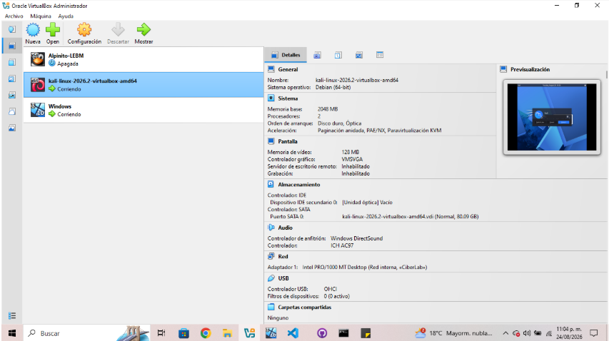
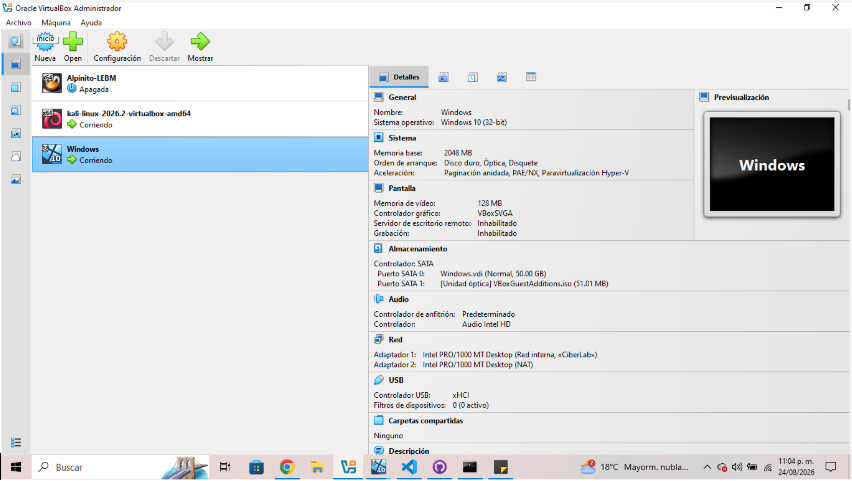
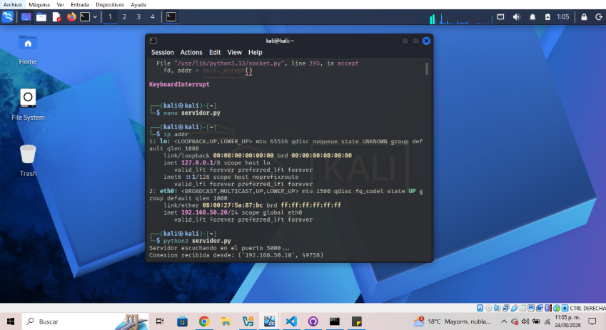
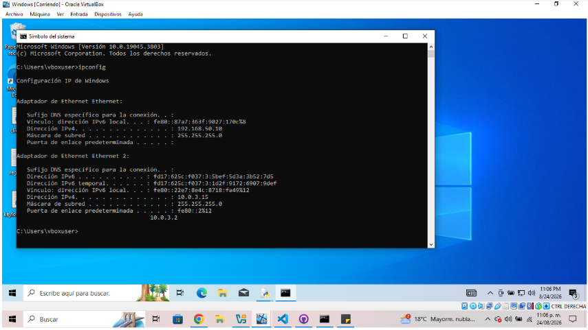
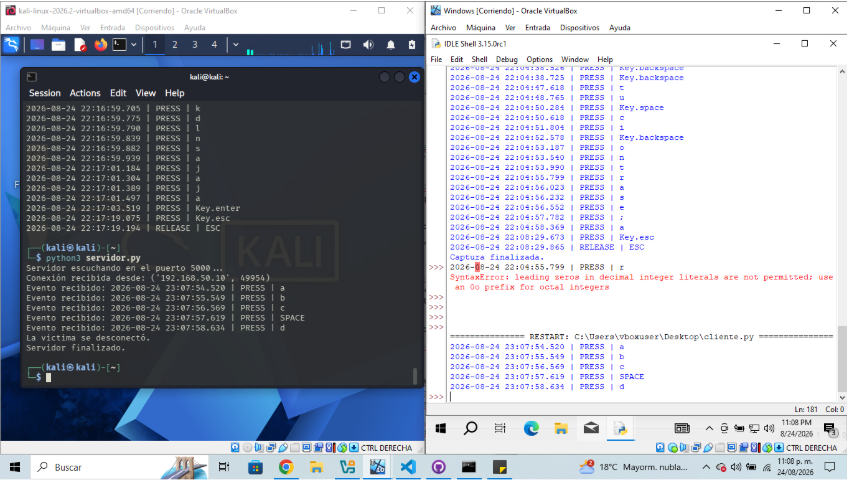
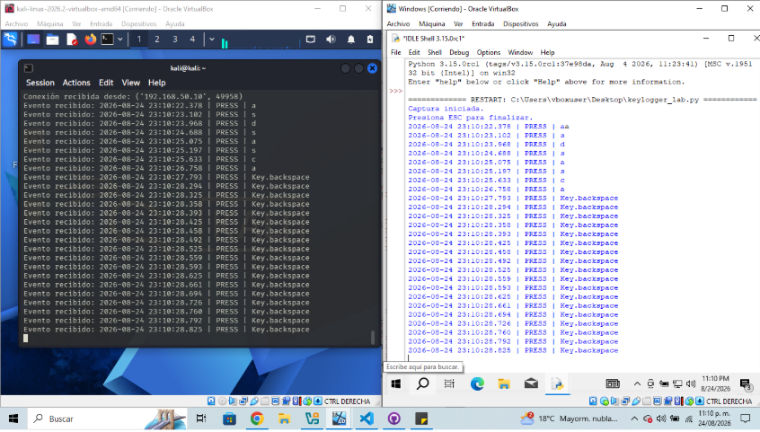
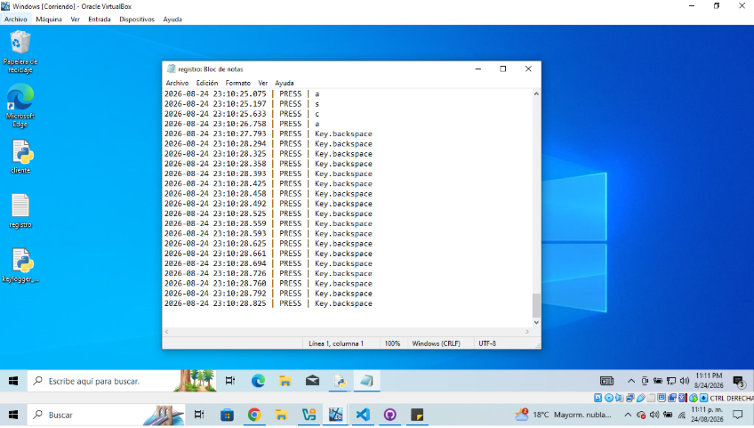
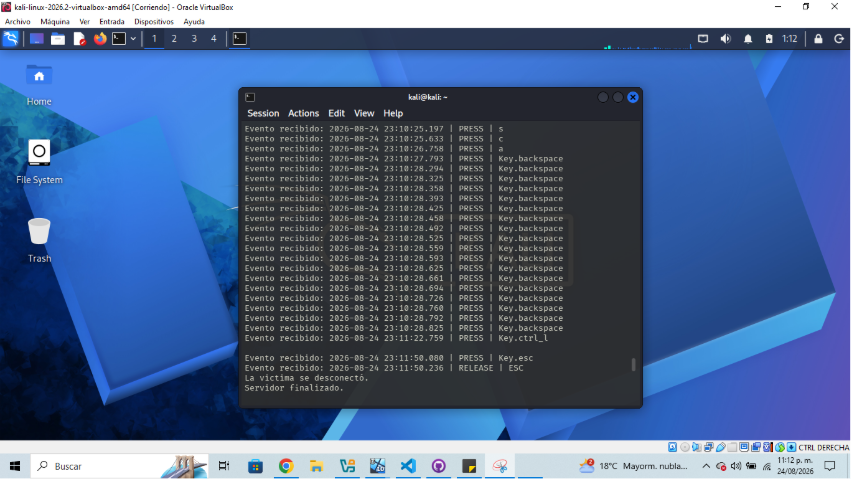
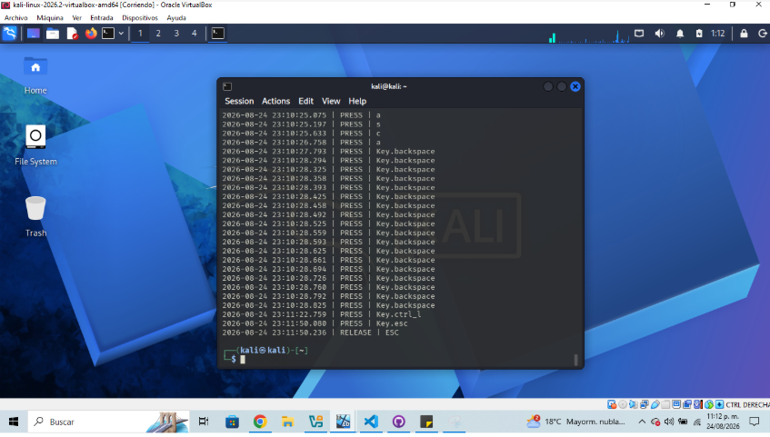

Objetivo
Implementar y documentar, dentro de un entorno de laboratorio controlado, un programa basado en eventos de teclado capaz de mantener persistencia del registro, asociar cada evento con una marca temporal y transmitir los registros hacia una máquina receptora.
La práctica se realizó exclusivamente en máquinas virtuales y con datos de prueba, con fines académicos.
Arquitectura del laboratorio
Desarrollo por etapas
1. Red virtual
Se configuró una red interna de VirtualBox denominada CiberLab. Windows utilizó 192.168.50.10/24 y Kali 192.168.50.20/24.
2. Comunicación TCP
Kali quedó escuchando en el puerto 5000. La primera prueba confirmó una conexión desde Windows y la recepción del mensaje “Hola Kali, Prueba de conexion socket”.
3. Múltiples eventos
Se mantuvo la conexión abierta y se enviaron cinco eventos consecutivos para verificar que el servidor pudiera recibir un flujo de datos y no solamente un mensaje.
4. Asociación temporal
Cada evento recibió una marca de fecha y hora con milisegundos, por ejemplo: 2026-08-24 22:15:03.125 | PRESS | H.
5. Persistencia
Windows almacena los eventos en registro.txt. El modo append permite conservar registros de ejecuciones anteriores.
6. Integración con pynput
Se integró pynput.keyboard.Listener para detectar eventos reales del teclado dentro de la VM. La tecla ESC finaliza la captura.
7. Envío a Kali
El mismo registro generado en Windows se transmite mediante el socket TCP hacia la dirección de Kali.
8. Registro receptor
Kali muestra los eventos recibidos en terminal y los almacena en registro_kali.txt, permitiendo comparar origen y recepción.
Evidencias
Las siguientes capturas documentan la configuración del laboratorio, las pruebas de comunicación y el resultado final de la actividad.

CiberLab.
CiberLab.
eth0 en Kali con la dirección 192.168.50.20/24 y ejecución del servidor TCP en el puerto 5000.
192.168.50.10 con máscara 255.255.255.0.

pynput. Windows registra los eventos con marca temporal mientras Kali los recibe en tiempo real.
registro.txt en Windows, utilizado para mantener persistencia local de los eventos generados durante la ejecución.
ESC.
Resultados
Las pruebas permitieron establecer correctamente la comunicación entre las dos máquinas virtuales. Los eventos generados en Windows fueron capturados, asociados con una marca temporal, almacenados localmente y enviados al servidor Kali mediante TCP.
Kali recibió los eventos durante la ejecución y posteriormente los almacenó en registro_kali.txt. Con ello se comprobó el flujo completo de generación, persistencia, transmisión y recepción dentro del laboratorio.
Consideraciones de ciberseguridad
La implementación utiliza TCP sin una capa adicional de cifrado o autenticación. Por ello tiene un propósito estrictamente académico y no debe utilizarse para transportar información sensible. La práctica demuestra por qué la captura no autorizada de entradas de usuario representa un riesgo para la confidencialidad.
El laboratorio fue aislado mediante la red interna de VirtualBox y se utilizaron únicamente datos de prueba.
Trabajo futuro
Como ampliación se propone analizar el tráfico generado mediante Wireshark para identificar el establecimiento de la conexión TCP, direcciones IP, puertos y flujo de datos. También podría compararse la implementación actual con una comunicación que incorpore cifrado y autenticación.
Conclusión
El laboratorio permitió integrar programación orientada a eventos, redes y conceptos de ciberseguridad en una arquitectura cliente-servidor. La construcción por etapas facilitó validar individualmente la red, el socket TCP, la persistencia, la asociación temporal y finalmente la captura mediante pynput.
La actividad permitió comprender tanto el funcionamiento técnico de la transmisión de eventos como los riesgos de seguridad asociados con la recopilación y envío de información sin mecanismos de protección.